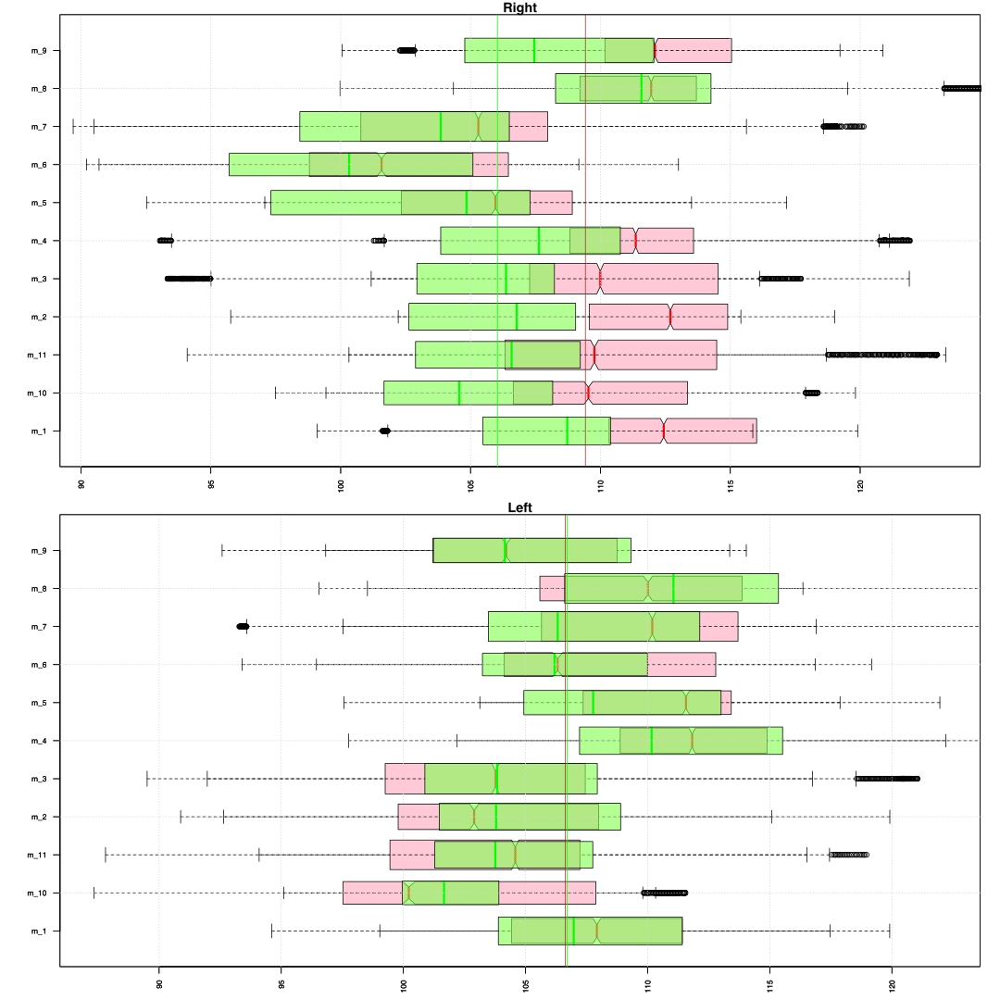

How the clavicles move relatively to the ribcage in the horisontal plane?
We need to look at shoulders representations that are given by two lines that connect marker (STRN) at top area of a breast bone (sternum) and bony parts of left and right shoulder joints (RSH and LSH markers placed at parts of the scapula that forms the highest points of the shoulders). These two lines (for right and left) reflect motion of the shoulders and in a 1st place of clavicles. Thus we can estimate amount of the protraction/retraction in the shoulder by looking at azimuth angles between the lines and ribcage. As anatomically the angle between clavicles is directed outwards, the smaller value of the angle between the clavicle line and forward orientation of the ribcage will correspond to the forwards motion of the shoulder (protraction) and higher angle to the backwards motion (retraction).
For the ribcage representation we take the spinal plane that represents the upper part of the ribcage (5th). This plane models a part between C7 to T7 vertebras, is perpendicular to the C7T7 line with the forward orientation that is defined by the STRN marker. Thus the azimuth angles are given by the forward points of the plane (sp5_1).
Summary. Relative orientation of the clavicles in the horisontal plane
The difference in azimuth angles (sp5_1-RSH_1 and LSH_1-sp5_1) are measured relatively to the forward direction of the 5th spinal plane and normalised to take positive values between 0 and 180 degrees. These values are angles from the right and left shoulder to the mid centere on the right and left sides respectively. The 2nd step of the Short Form has 3 intervals with last two being identical motion sequence: one on the left and one on right side. In contrast the 1st interval involves a full body turn in space by 90 degrees leftwards and thus we don’t include this movement in the summary of the azimuth angles to avoid possible left/right biases.
For the azimuth angles in the 4th to 11 sub-movements we can see that 1st group has a slightly higher mean value (around 2 degrees) than the 2nd for the right clavicle and about the same mean for the left clavicle. In the beginning of trials (2001-code) than person is standing, both groups seem to have about 2-3 degrees larger angles or in other words on average shoulder were more retracted in the static posture comparing to the summarised motion intervals. The range of values is bigger in the 2nd group for the right shoulder but for the left side maximum protraction value seems to be higher (94.1 vs. 87.34 degrees).
The mean values between right and left are slightly higher in the 2nd group (about 3 degrees) and the minimum value is about 10 degrees smaller than in the 1st group (119.3 vs. 108.8 degrees). As the right and left clavicles form an angle that is bigger than 180 degrees from the front, its normalised value (RSH-LSH) corresponds to the positive angle from the back and is smaller than 180 degrees.
Azimuth (C7T7 - RSH) >> 2nd step SF, 4th - 11th sub-movements
| mean | sd | sem | n | NAs | max | min | |
|---|---|---|---|---|---|---|---|
| 1st group | 108.5 | 5.894 | 0.0291 | 41155 | 0 | 123.3 | 90.5 |
| 2nd group | 106.1 | 6.742 | 0.0382 | 31142 | 0 | 125 | 89.7 |
| 2001-1st | 111.5 | 3.668 | 0.9804 | 14 | 0 | 117.3 | 105.5 |
| 2001-2nd | 108.4 | 3.661 | 1.104 | 11 | 0 | 113.3 | 103.6 |
Azimuth ( LSH - C7T7) >> 2nd step SF, 4th - 11th sub-movements
| mean | sd | sem | n | NAs | max | min | |
|---|---|---|---|---|---|---|---|
| 1st group | 107.3 | 6.169 | 0.0304 | 41155 | 0 | 122.2 | 87.34 |
| 2nd group | 107.4 | 6.131 | 0.0347 | 31142 | 0 | 126.3 | 94.1 |
| 2001-1st | 109.5 | 4.766 | 1.274 | 14 | 0 | 115.4 | 103.6 |
| 2001-2nd | 110 | 3.885 | 1.171 | 11 | 0 | 116.7 | 105.5 |
Azimuth (RSH - LSH) >> 2nd step SF, 11 sub-movements
| mean | sd | sem | n | NAs | max | min | |
|---|---|---|---|---|---|---|---|
| 1st group | 144.1 | 9.642 | 0.0399 | 58527 | 0 | 173.2 | 119.3 |
| 2nd group | 146.9 | 10.74 | 0.0507 | 44872 | 0 | 172.6 | 108.8 |
| 2001-1st | 139 | 7.542 | 2.016 | 14 | 0 | 150 | 128.3 |
| 2001-2nd | 141.7 | 5.901 | 1.779 | 11 | 0 | 150.3 | 133.4 |
Than data of the 4th to 11th sub-movements is grouped by trial identities density plots vary among the trials but within the same trial show similar distributions for left and right sides with the few clear exceptions (‘id_103’, ‘id_208’, ‘id_205’). Than data is grouped by 11 sub-movements we can notice that the 1st group has higher values for the right shoulder across all sub-movements (green boxplots are shifted leftwards towards smaller angles comparing to the red boxplots). However the left side is much less differentiable between 1st and 2nd group.
Than data is grouped by two intervals we can see that in all trials right clavicle in the 1st interval has wider and smaller range of values (green boxplots for right) that approximates values for the left clavicle in the 2nd interval (red boxplots in for left) and vice versa. This is expected as movement of the left and right arms are switched in the 1st and 2nd intervals. Furthermore in the 2 x 4 panel of the boxplots for the 4 phases of two intervals we can notice that one of the shoulders clearly moves more and has smaller values (is less retracted) than the other (right shoulder in the 1st interval and left in the 2nd); e.g. in 1st column brown and green boxplots have wide range of values and in the 2nd column wider ranges are taken by pale green and yellow boxplots. Also in most trials in the 1st and last phases (4th, 8th, 7th and 11th sub-movements) both shoulders move more than in the 2 mid phases of the intervals.
The time series of the difference angle between right and left clavicles seem to be correlated between 1st and 2nd interval within most of the trials (olive and dark pink lines). They also seem to be correlated with the difference between the angles that measure the relation of clavicles and the midline of the body (the forward orientation of the ribcage) or in other words these are the values that we get than we subtract time series of the right clavicle angles from the time series of the left clavicle angles from the previous plot panel (red minus orange and dark green minus light green). This correlation is positive for the 1st interval and negative for the 2nd (green and olive line for the 1st, pink and red lines for the 2nd). In the 3rd plot panel than we compare the difference values (green and red lines for the 1st and 2nd intervals) with the orientation of the ribcage (light and dark grey for the 1st and 2nd intervals) it seems that in most of the trials these values are connected. As the ribcage turns to the left side in the 1st interval (light grey, positive values) right shoulder tends to move more forward (dark green, positive values) and vice versa for the right turn of the ribcage in the 2nd interval.
Relative orientation of the clavicles in the horisontal plane, grouped by id-trials
Below are boxplots of the clavicle angles relative to the ribcage across different trials for the 4th to 11th sub-movements in the 2nd step of the Short Form. Brown color represents the 1st group and green the 2nd. Horizontal axes are given in degrees of the angles; the vertical axes represent grouping factor – identity of the trial.
Azimuth (C7T7 - RSH) >> 2nd step SF, 4th - 11th sub-movements
| mean | sd | sem | n | NAs | max | min | |
|---|---|---|---|---|---|---|---|
| 1st group | 108.5 | 3.538 | 0.9456 | 14 | 0 | 115.5 | 104.4 |
| 2nd group | 106 | 5.001 | 1.508 | 11 | 0 | 115.9 | 98.35 |
Azimuth ( LSH - C7T7) >> 2nd step SF, 4th - 11th sub-movements
| mean | sd | sem | n | NAs | max | min | |
|---|---|---|---|---|---|---|---|
| 1st group | 107.4 | 4.205 | 1.124 | 14 | 0 | 113.9 | 101.6 |
| 2nd group | 107.5 | 4.58 | 1.381 | 11 | 0 | 116.3 | 101.9 |
Azimuth (RSH - LSH) >> 2nd step SF, 4th - 11th sub-movements
| mean | sd | sem | n | NAs | max | min | |
|---|---|---|---|---|---|---|---|
| 1st group | 144.2 | 7.23 | 1.932 | 14 | 0 | 153.7 | 130.6 |
| 2nd group | 146.5 | 8.682 | 2.618 | 11 | 0 | 159.8 | 127.8 |
Azimuth (RSH - LSH) >> 2nd step SF, 1st-11th sub-movements
| mean | sd | sem | n | NAs | max | min | |
|---|---|---|---|---|---|---|---|
| 1st group | 143.9 | 7.207 | 1.926 | 14 | 0 | 154 | 130.4 |
| 2nd group | 147 | 8.143 | 2.455 | 11 | 0 | 160.1 | 129.3 |
Density plots of the angle values for the sub-movements of two symmetrical intervals (4th to 11th) grouped by the trial identities.
Brown color represents the right clavicle angles (C7T7 - RSH) for the 1st group and light green the 2nd; vertical lines mark mean value of the corresponding trials. The orange color represents the left angles (C7T7 - LSH) for the 1st group and dark green the 2nd; vertical lines mark mean value of the corresponding trials. Dark pink color represents the difference angle between the right and left (RSH - LSH).
Blue vertical lines mark the angle values in the beginning of the form (2001-code). The dotted blue line marks the left clavicle whereas the continius blue lines the right.

Relative orientation of the clavicles in the horisontal plane, grouped by sub-movements
Also we can look at differences in the angles across the 11 sub-movements without differentiating between individual trials. The red color represents the 1st group and green the 2nd. Horizontal axes are given in degrees of the angles and the vertical axes represent grouping factor – a number of the sub-movement.

Azimuth (C7T7 - RSH) >> 2nd step SF, 4th - 11th sub-movements
| mean | sd | sem | n | NAs | max | min | |
|---|---|---|---|---|---|---|---|
| 1st group | 108.6 | 3.835 | 1.356 | 8 | 0 | 112.4 | 102.2 |
| 2nd group | 105.8 | 3.644 | 1.288 | 8 | 0 | 111.9 | 100.6 |
Azimuth ( LSH - C7T7) >> 2nd step SF, 4th - 11th sub-movements
| mean | sd | sem | n | NAs | max | min | |
|---|---|---|---|---|---|---|---|
| 1st group | 107.2 | 3.761 | 1.33 | 8 | 0 | 112 | 101.6 |
| 2nd group | 107.1 | 3.16 | 1.117 | 8 | 0 | 111.2 | 102.4 |
Azimuth (RSH-LSH) >> 2nd step SF, 4th - 11th sub-movements
| mean | sd | sem | n | NAs | max | min | |
|---|---|---|---|---|---|---|---|
| 1st group | 144.2 | 4.674 | 1.653 | 8 | 0 | 150.2 | 136.4 |
| 2nd group | 147.1 | 5.448 | 1.926 | 8 | 0 | 152.3 | 137 |
Density plots of the angle values grouped by the 11 sub-movements. Brown color represents the 1st group and green the 2nd; vertical lines mark mean value of the corresponding sub-movement for 1st and 2nd group. The 2nd and 3rd rows capture a symmetrical motion sequence: from the left into right bow stance and from the right into left.
Relative orientation of the clavicles in the horisontal plane, grouped by id-trials and sub-movements
Below are boxplots for two intervals of the 2nd step that capture symmetrical body motion: from the left to right bow stance and from the right to left bow stance. The boxplots of these intervals are superimposed for each of the trials. The 1st interval is marked by green color and the 2nd by red (color is not associated with groups).
Also, we can differentiate between the different sub-movements within the two intervals and look at them individually. Below are two columns of the boxplots with 4 rows that represent consecutive phases of our two intervals. The 1st column represents the movement from the left to right bow stance (4th - 7th sub-movements), the 2nd column represents the movement from the right to left bow stance (8th - 11th sub-movements).
Brown and green color mark data of the angles for the right clavicle in the 1st and 2nd group. Pale semi-transparent yellow and cyan-green colors mark angles of the left clavicle for the 1st and 2nd group.
Furthermore we can compare the actual time series for the two intervals. The figure below shows 25 plots for each of the trials with the red/orange color marking the 2nd interval and green the 1st. Vertical lines show boundaries for the four sub-movements within each interval; horizontal lines show right (green) and left (dark green) angles in the 1st frame of the trial than a person is in a straight position; and a blue horizontal line marks their difference in this 1st frame of the trial.
Horizontal axis is given in frames with sampling frequency 120 frames per second.
Green colors are for the 1st interval (4-7th sub-movements; left to right bow stance) and red-like for the 2nd interval (8-11th sub-movements; right to left bow stance); darker colors are for the left clavicle and lighter colors for the right clavicle.
Right side (1-green & 2-orange), Left side (1-dark green & 2-red)

Below are the time series for the difference between the right and left clavicles ((LSH_1-sp5_1)-(sp5_1-RSH_1)) in relation to the ribcage; in other words these values represent the motion of the shoulders only. Time series for the 1st interval are in the green color and for the 2nd interval in the red color. The positive value indicates that the right shoulder is closer to the body midline (more protracted) than the left shoulder. The lines in the light grey color represent azimuth angles of the ribcage in the 1st interval and in the dark grey in the 2nd. The olive and pink colors mark absolute angle between clavicle lines in the horisontal plane (RSH-LSH) for the 1st and 2nd intervals respectively. As the ribcage turns to the left side in the 1st interval (light grey, positive values) right shoulder moves more forward (dark green, positive values) and vice versa for the right turn in the 2nd interval. The absolute angle between clavicles (olive and pink lines) increases in as shoulders gets more inwards (closer to each other). This happens because this angle is normalised and shows an angle between clavicle lines that anatomically is a convex angle from the back of the body. Thus protraction of any shoulder increases its value.
(RSH-LSH) (1-olive & 2-dark pink), C7T7 (1-light grey, 2-dark grey)
(C7T7-LSH)-(RSH-C7T7) (1-dark green & 2-red)

C7T7 (1-light grey, 2-dark grey), (C7T7-LSH)-(RSH-C7T7) (1-dark green & 2-red)